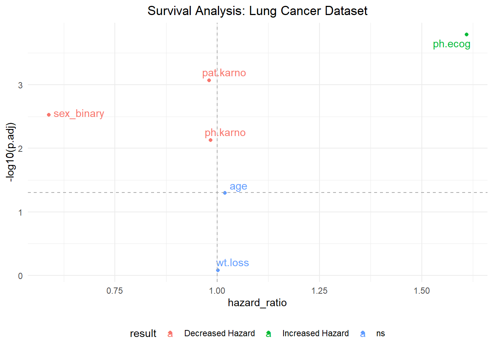
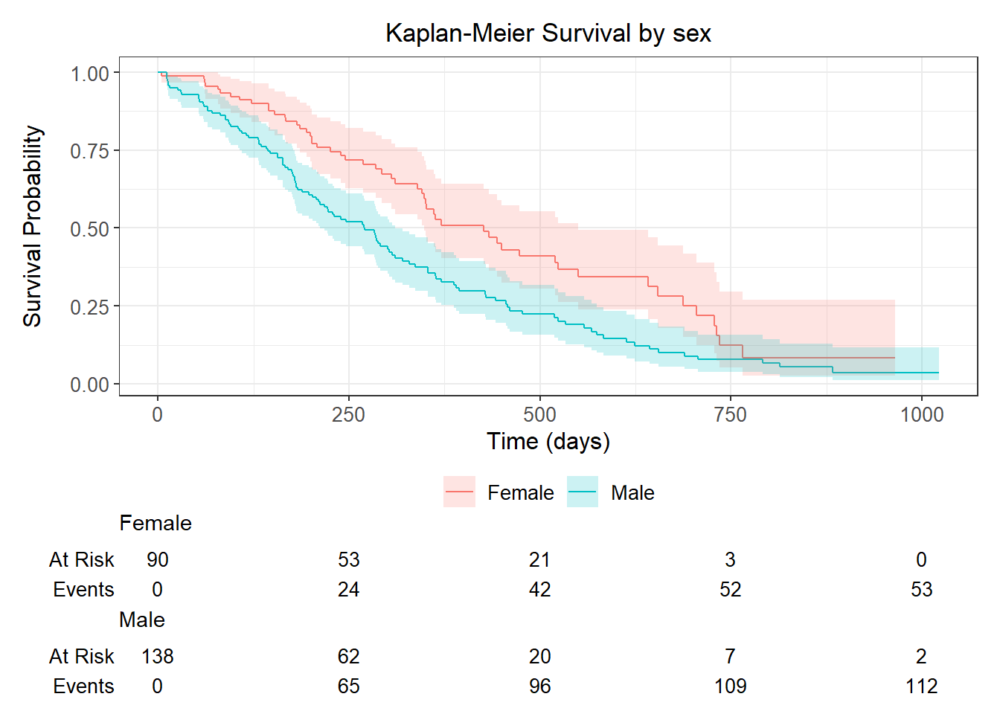
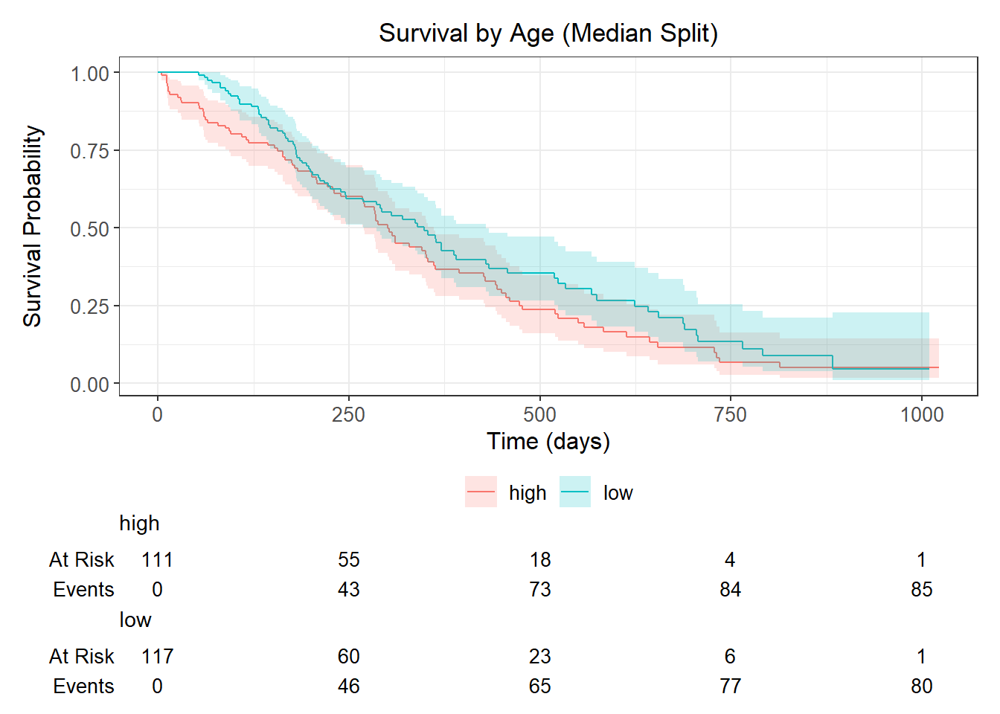
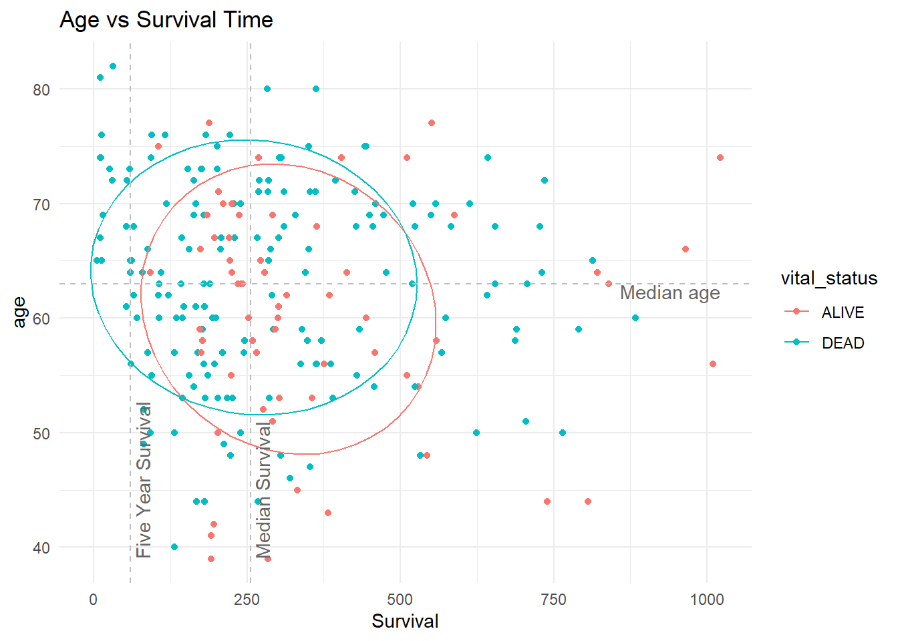
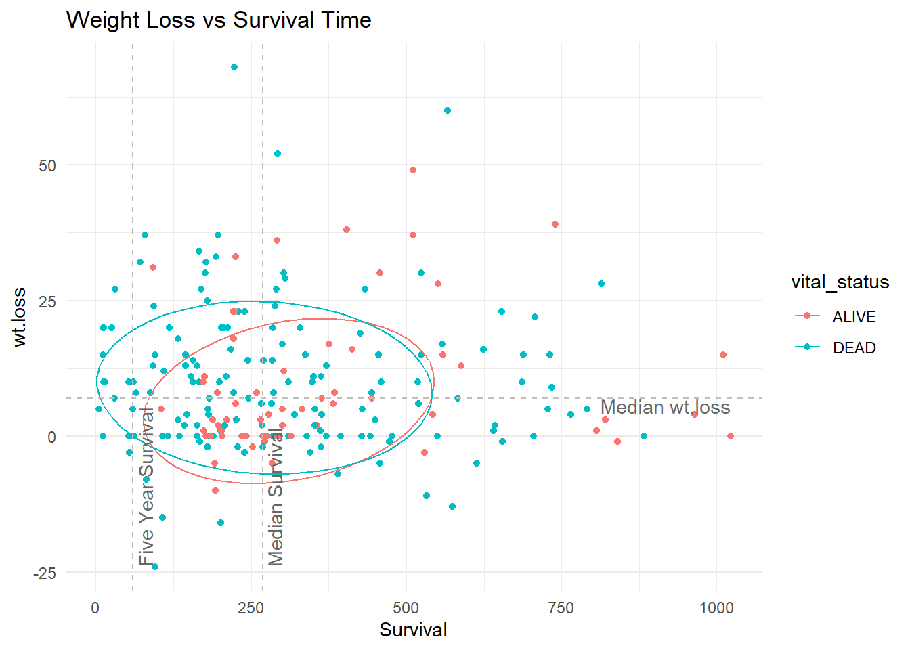

Survival Analysis with Pmisc
Alyssa Pybus
2026-01-12
survival_analysis.RmdIntroduction
The Pmisc package includes several functions for survival analysis, making it easy to:
- Test multiple features for association with survival using Cox proportional hazards models
- Create publication-ready Kaplan-Meier survival curves
- Visualize survival results with volcano plots
- Explore relationships between gene expression and overall survival
These functions provide a streamlined wrapper around the
survival,
tidycmprsk, and
ggsurvfit packages.
This vignette demonstrates these functions using the
lung dataset from the survival package.
The Lung Cancer Dataset
The lung dataset contains survival data from patients
with advanced lung cancer:
# Load the lung dataset
data(lung)
#> Warning in data(lung): data set 'lung' not found
# Preview the data
head(lung) %>% knitr::kable()| inst | time | status | age | sex | ph.ecog | ph.karno | pat.karno | meal.cal | wt.loss |
|---|---|---|---|---|---|---|---|---|---|
| 3 | 306 | 2 | 74 | 1 | 1 | 90 | 100 | 1175 | NA |
| 3 | 455 | 2 | 68 | 1 | 0 | 90 | 90 | 1225 | 15 |
| 3 | 1010 | 1 | 56 | 1 | 0 | 90 | 90 | NA | 15 |
| 5 | 210 | 2 | 57 | 1 | 1 | 90 | 60 | 1150 | 11 |
| 1 | 883 | 2 | 60 | 1 | 0 | 100 | 90 | NA | 0 |
| 12 | 1022 | 1 | 74 | 1 | 1 | 50 | 80 | 513 | 0 |
# Summary of key variables
summary(lung[, c("time", "status", "age", "sex", "ph.ecog")])
#> time status age sex
#> Min. : 5.0 Min. :1.000 Min. :39.00 Min. :1.000
#> 1st Qu.: 166.8 1st Qu.:1.000 1st Qu.:56.00 1st Qu.:1.000
#> Median : 255.5 Median :2.000 Median :63.00 Median :1.000
#> Mean : 305.2 Mean :1.724 Mean :62.45 Mean :1.395
#> 3rd Qu.: 396.5 3rd Qu.:2.000 3rd Qu.:69.00 3rd Qu.:2.000
#> Max. :1022.0 Max. :2.000 Max. :82.00 Max. :2.000
#>
#> ph.ecog
#> Min. :0.0000
#> 1st Qu.:0.0000
#> Median :1.0000
#> Mean :0.9515
#> 3rd Qu.:1.0000
#> Max. :3.0000
#> NA's :1Key variables:
-
time: Survival time in days -
status: Censoring status (1 = censored, 2 = dead) -
age: Age in years -
sex: 1 = male, 2 = female -
ph.ecog: ECOG performance score (0-3)
Standardizing the Data
The Pmisc survival functions expect status coded as 0/1
(0 = censored, 1 = event). Let’s prepare the data:
Cox Proportional Hazards Analysis
The coxph_all() function tests multiple features
simultaneously for association with survival:
# Define features to test
features <- c("age", "sex_binary", "ph.ecog", "ph.karno", "pat.karno", "wt.loss")
# Run Cox proportional hazards for all features
cox_results <- coxph_all(
df = lung_prep,
feature.names = features,
time_col = "time",
status_col = "status"
)
# View results
cox_results %>%
select(feature, n, hazard_ratio, wald_p, p.adj, p.signif, result) %>%
knitr::kable(digits = 4)| feature | n | hazard_ratio | wald_p | p.adj | p.signif | result |
|---|---|---|---|---|---|---|
| age | 228 | 1.0189 | 0.0419 | 0.0502 | ns | ns |
| sex_binary | 228 | 0.5880 | 0.0015 | 0.0030 | ** | Decreased Hazard |
| ph.ecog | 227 | 1.6095 | 0.0000 | 0.0002 | *** | Increased Hazard |
| ph.karno | 227 | 0.9837 | 0.0050 | 0.0074 | ** | Decreased Hazard |
| pat.karno | 225 | 0.9803 | 0.0003 | 0.0008 | *** | Decreased Hazard |
| wt.loss | 214 | 1.0013 | 0.8282 | 0.8282 | ns | ns |
Interpreting the results:
- Hazard ratio > 1: Higher feature values associated with increased risk of death
- Hazard ratio < 1: Higher feature values associated with decreased risk of death
- p.adj: Adjusted p-value (FDR correction)
- result: Classification (Increased Hazard, Decreased Hazard, or ns)
In this example:
- sex_binary shows decreased hazard (females have better survival)
- ph.ecog shows increased hazard (worse performance status = worse survival)
Survival Volcano Plot
Visualize the Cox regression results with a volcano plot:
survival_volcano(cox_results) +
ggtitle("Survival Analysis: Lung Cancer Dataset")
Reading the plot:
- X-axis: Hazard ratio (1.0 = no effect)
- Y-axis: -log10(adjusted p-value)
- Vertical dashed line: Hazard ratio = 1 (no effect)
- Horizontal dashed line: p = 0.05 significance threshold
- Colors: Direction of effect (increased vs decreased hazard)
Customizing Volcano Colors with scm()
You can control the exact colors of the volcano plot using the
scm() helper:
# Define custom colors for hazard categories
volcano_colors <- data.frame(
breaks = c("Increased Hazard", "Decreased Hazard", "ns"),
values = c("red3", "blue3", "grey80"),
stringsAsFactors = FALSE
)
# Apply to plot
survival_volcano(cox_results) +
scm(volcano_colors) + # Apply custom color scale
ggtitle("Survival Volcano with Custom Colors")
Kaplan-Meier Survival Curves
The KM_categorical() function creates Kaplan-Meier
curves for categorical or continuous variables:
Binary Variable: Sex
# Create categorical variable for sex
lung_km <- lung_prep %>%
mutate(sex_cat = ifelse(sex_binary == 1, "Female", "Male"))
# Kaplan-Meier plot by sex
KM_categorical(
df = lung_km,
gene = "sex", # Column name prefix
time_scale = "Time (days)",
reclass = FALSE # Don't split by median since already categorical
)
Continuous Variable: Age
For continuous variables, KM_categorical() automatically
splits at the median:
# Kaplan-Meier plot for age (split at median)
KM_categorical(
df = lung_prep,
gene = "age",
time_scale = "Time (days)",
reclass = TRUE # Split continuous variable at median
) +
ggtitle("Survival by Age (Median Split)")
ECOG Performance Score
# Create binary ECOG variable (good vs poor performance)
lung_ecog <- lung_prep %>%
filter(!is.na(ph.ecog)) %>%
mutate(ph.ecog_cat = ifelse(ph.ecog <= 1, "Good (0-1)", "Poor (2-3)"))
KM_categorical(
df = lung_ecog,
gene = "ph.ecog",
time_scale = "Time (days)",
reclass = FALSE
) +
ggtitle("Survival by ECOG Performance Status")
Gene Expression vs Overall Survival
The gene_OS_scatter() function creates scatter plots
showing the relationship between a feature and survival time:
gene_OS_scatter(
df = lung_prep,
gene = "age"
) +
ggtitle("Age vs Survival Time")
#> Warning: `aes_string()` was deprecated in ggplot2 3.0.0.
#> ℹ Please use tidy evaluation idioms with `aes()`.
#> ℹ See also `vignette("ggplot2-in-packages")` for more information.
#> ℹ The deprecated feature was likely used in the Pmisc package.
#> Please report the issue to the authors.
#> This warning is displayed once per session.
#> Call `lifecycle::last_lifecycle_warnings()` to see where this warning was
#> generated.
Plot elements:
- Each point represents one patient
- Color indicates vital status (alive vs dead)
- Dashed lines show medians (survival time and gene expression)
- Ellipses show 68% confidence regions
- Vertical line at 60 months (5-year survival)
# Another example: Weight loss vs survival
lung_wt <- lung_prep %>% filter(!is.na(wt.loss))
gene_OS_scatter(
df = lung_wt,
gene = "wt.loss"
) +
ggtitle("Weight Loss vs Survival Time")
Complete Workflow Example
Here’s a complete analysis workflow:
# 1. Prepare data
lung_analysis <- lung %>%
mutate(
status = status - 1,
Female = (sex == 2) * 1,
Elderly = (age >= 65) * 1
) %>%
filter(!is.na(time), !is.na(status))
# 2. Test multiple features
features_test <- c("age", "Female", "Elderly", "ph.ecog", "ph.karno", "meal.cal", "wt.loss")
cox_results_full <- coxph_all(
df = lung_analysis,
feature.names = features_test,
time_col = "time",
status_col = "status"
)
# 3. View significant results
cox_results_full %>%
filter(p.signif != "ns") %>%
select(feature, hazard_ratio, p.adj, result) %>%
arrange(p.adj) %>%
knitr::kable(digits = 4)| feature | hazard_ratio | p.adj | result |
|---|---|---|---|
| ph.ecog | 1.6095 | 0.0002 | Increased Hazard |
| Female | 0.5880 | 0.0052 | Decreased Hazard |
| ph.karno | 0.9837 | 0.0116 | Decreased Hazard |
# 4. Visualize results
survival_volcano(cox_results_full) +
ggtitle("Survival Analysis: Comprehensive Feature Testing")
Advanced: Custom Survival Analysis
For more complex analyses, you can combine Pmisc functions with base survival functions:
# Test interaction between sex and age
lung_interaction <- lung_prep %>%
mutate(
age_group = cut(age,
breaks = c(0, 60, 70, 100),
labels = c("Young", "Middle", "Old")
),
sex_label = ifelse(sex_binary == 1, "Female", "Male")
) %>%
filter(!is.na(age_group))
# Run Cox model with interaction
cox_interaction <- coxph(Surv(time, status) ~ age_group * sex_label,
data = lung_interaction
)
summary(cox_interaction)
#> Call:
#> coxph(formula = Surv(time, status) ~ age_group * sex_label, data = lung_interaction)
#>
#> n= 228, number of events= 165
#>
#> coef exp(coef) se(coef) z Pr(>|z|)
#> age_groupMiddle -0.1587 0.8533 0.3105 -0.511 0.609
#> age_groupOld 0.1607 1.1743 0.3744 0.429 0.668
#> sex_labelMale 0.3002 1.3502 0.2572 1.167 0.243
#> age_groupMiddle:sex_labelMale 0.3702 1.4480 0.3812 0.971 0.331
#> age_groupOld:sex_labelMale 0.3911 1.4786 0.4495 0.870 0.384
#>
#> exp(coef) exp(-coef) lower .95 upper .95
#> age_groupMiddle 0.8533 1.1719 0.4643 1.568
#> age_groupOld 1.1743 0.8516 0.5638 2.446
#> sex_labelMale 1.3502 0.7407 0.8155 2.235
#> age_groupMiddle:sex_labelMale 1.4480 0.6906 0.6860 3.057
#> age_groupOld:sex_labelMale 1.4786 0.6763 0.6126 3.569
#>
#> Concordance= 0.608 (se = 0.026 )
#> Likelihood ratio test= 16.02 on 5 df, p=0.007
#> Wald test = 16.23 on 5 df, p=0.006
#> Score (logrank) test = 16.91 on 5 df, p=0.005Interpreting Hazard Ratios
- HR = 1.0: No effect on survival
- HR = 2.0: Doubling of risk (twice as likely to experience event)
- HR = 0.5: Halving of risk (half as likely to experience event)
Examples from our analysis:
- Female sex (HR ≈ 0.59): Females have ~41% lower risk of death than males
- ECOG score (HR ≈ 1.62): Each 1-point increase in ECOG score increases risk by ~62%
Summary
The Pmisc survival analysis functions provide:
-
Batch testing with
coxph_all()- Test many features at once - Automatic correction - FDR adjustment for multiple testing
- Visual summaries - Volcano plots and Kaplan-Meier curves
- Exploration tools - Scatter plots linking expression to survival
- Sample size validation - Removes features with insufficient data
These tools are particularly useful for:
- Biomarker discovery in clinical studies
- Gene expression and survival associations
- Prognostic factor identification
- Exploratory survival analysis